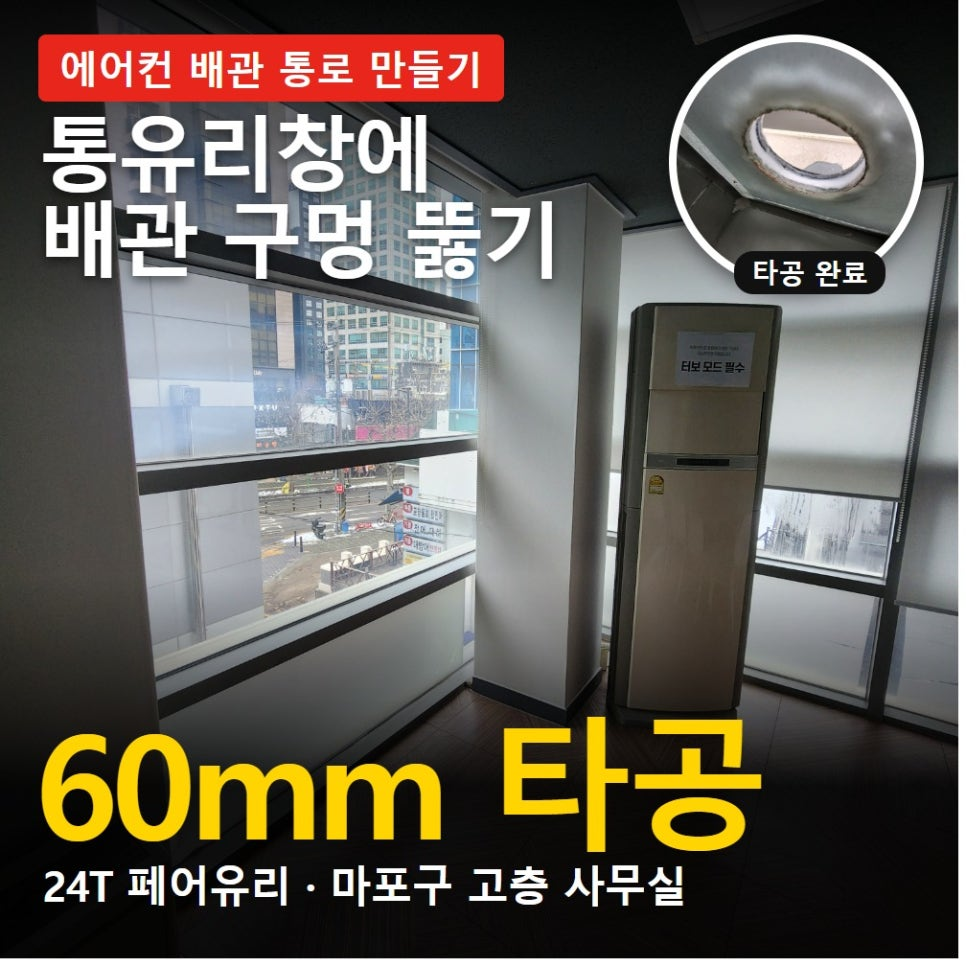
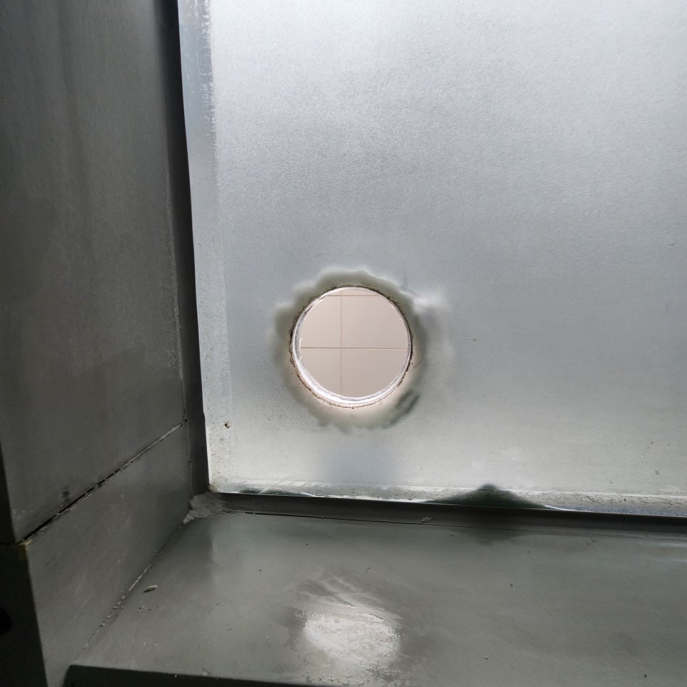
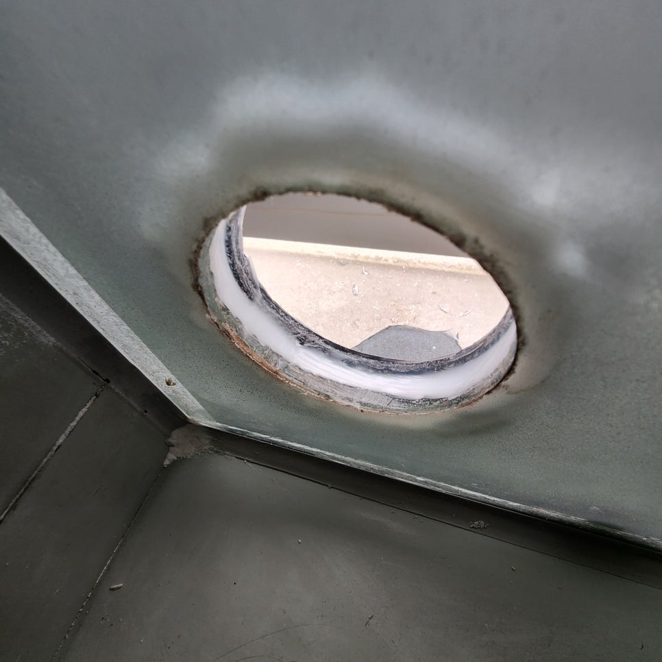

에어컨배관구멍은 창을 열 수 없는 사무실에서 스탠드 에어컨을 쓰려면 꼭 필요한 통로입니다. 서울 마포의 한 고층 사무실은 창 전체가 24T 이중유리 통창이라, 유리 아래쪽에 지름 60mm 구멍을 내서 배관 길을 만들었습니다.
한눈에 보기
| 작업 | 이중유리 구멍 작업 |
|---|---|
| 지역 | 서울 마포구 |
| 장소 | 고층 사무실 |
| 유리 | 24T 이중유리(복층유리) |
| 구멍 크기 | 60mm, 에어컨 배관용 |




열리지 않는 통창이면 에어컨 배관은 어디로 빼나요?
고층 사무실은 창을 크게 열 수 없는 통창인 경우가 많습니다. 이럴 때는 유리에 배관이 지나갈 구멍을 따로 내야 합니다.
이중유리에도 유리구멍을 낼 수 있나요?
됩니다. 다만 유리 두 장이 겹친 구조라 무리하게 뚫으면 깨지거나, 조각이 건물 밖으로 떨어질 위험이 있어 홑유리보다 더 조심해서 작업합니다.
에어컨배관구멍 작업 순서
- 배관이 지나갈 위치를 창 아래쪽으로 정했습니다.
- 구멍 크기는 에어컨 배관이 통과할 수 있는 60mm로 정했습니다.
- 고층이라 유리 조각이 밖으로 떨어지지 않도록 가장 신경 쓰며, 서두르지 않고 천천히 뚫었습니다.
- 60mm 구멍이 나면서 배관을 밖으로 뺄 길이 생겼습니다.
에어컨배관구멍 비용은 얼마인가요?
이중유리 구멍 작업은 대략 15만~25만 원 선입니다.
유리 상태와 구멍 낼 위치에 따라 달라질 수 있어 사진을 보고 안내해 드립니다.
자주 묻는 질문
- Q. 배관 구멍은 보통 몇 mm로 내나요?
- 에어컨 배관이 지나가기 알맞은 60mm로 많이 뚫습니다. 이 현장도 60mm였습니다.
- Q. 유리천공 견적은 무엇을 보내면 되나요?
- 구멍 낼 유리창 전체 사진과 배관이 지나갈 위치를 보내 주시면 됩니다.